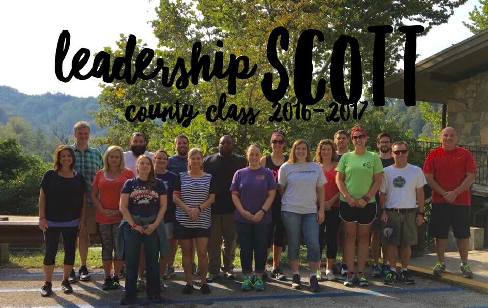

Leadership Scott County 2016-2017: The Case for Scroggin Park
All Leadership Scott County classes are tasked with completing a project in the community. The 2016-2017 class is no different. This presentation walks through the process of nailing down a project in Scroggin Park.
Past LSC Projects


Past Leadership Scott County have done projects throughout Georgetown. We wanted to see if we could do a project in an area where there hasn't been much work done by Leadership Scott County. Do figure this out, we found data that showed the locations of previous Leadership Scott County projects. We generated buffers of various distances around the project locations to try and determine if there were areas underserved by previous LSC projects.
Buffers of 1/10 mi and 1/4 mi still left a lot of Georgetown to sift through. The 1.0 mi buffer left very little. Examining Georgetown outside of the 1/2 mi buffers presented some intriguing options.
Scroggin Park
The 1/2 mile buffer around each project limited the possible areas we could look for a project in. Some areas are well-off neighborhoods. Others are industrial or commercial areas. However, one spot stuck out to us: Scroggin Park. Scroggin Park is run by the Georgetown Housing Authority and provides public housing for low-income residents.

Kristiansand
Etiam nec vulputate tellus. Mauris varius aliquam congue. Etiam ac dolor sed felis pellentesque iaculis. In hac habitasse platea dictumst. Vivamus bibendum, nisi id tempor fringilla, augue velit posuere eros, vel mollis massa nisl eget mi. In sit amet libero quis ipsum bibendum pulvinar. In hac habitasse platea dictumst. Vestibulum congue justo erat, a vulputate nibh aliquet vitae. Morbi accumsan lobortis diam, ut aliquet est venenatis sit amet.
Vestibulum eleifend varius nisi vitae mattis. Proin egestas diam eu justo porta feugiat. Phasellus nec nisl congue elit mattis facilisis. Sed semper lorem in elementum facilisis. Mauris malesuada at felis sit amet commodo. Cras egestas nec metus nec aliquet. Suspendisse at feugiat elit, at tincidunt odio. Etiam ac magna justo. Nunc eget congue augue. Mauris eget arcu non purus rutrum accumsan vitae condimentum ligula. Sed blandit interdum neque, in adipiscing ligula placerat vel.
In at molestie nulla, at molestie nulla. Donec ut vehicula velit, sed scelerisque sapien. Proin sodales laoreet dapibus. Phasellus in tristique orci. Morbi iaculis vestibulum magna, et fermentum lacus ornare non. Quisque malesuada et dolor ac mollis. Duis egestas ullamcorper dui, vel rhoncus nisl congue ut. Nunc feugiat velit at congue congue. Suspendisse sapien ligula, gravida non rhoncus ut, porta ut ipsum. In urna orci, scelerisque non sem et, condimentum feugiat lorem. Nam nec nunc nisl.